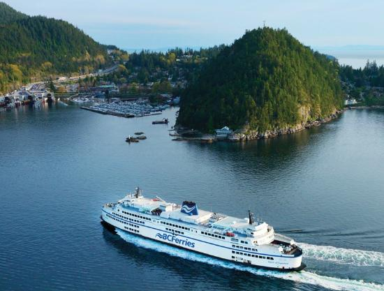

The Harbour City
Welcome to Nanaimo ~ The Harbour City
General Info about Nanaimo
The city of Nanaimo is located in beautiful British Columbia, on the east coast of Vancouver Island.
It is located 60km west of Vancouver and 111km north of Victoria.
Transportation Options
The BC Ferries service connects Nanaimo and Vancouver, taking less than two hours to cross.

Harbour Air Seaplane flights are also available, taking approximately 20 minutes from downtown Vancouver to downtown Nanaimo.

History
Snuneymuxw is the indigenous name of Nanaimo. The first explorers of Nanaimo Bay were Europeans.
They found Nanaimo Bay on 1791, and named it Bocas de Winthuysen.